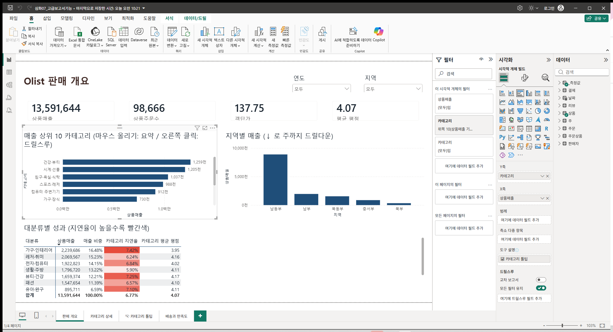
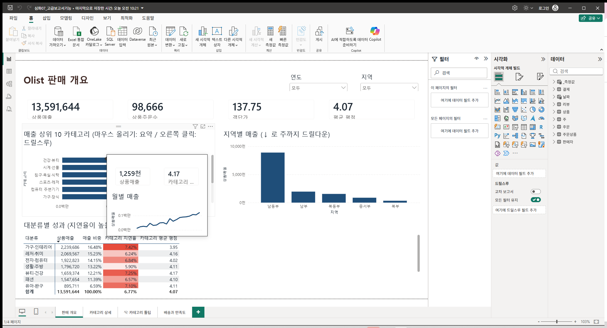
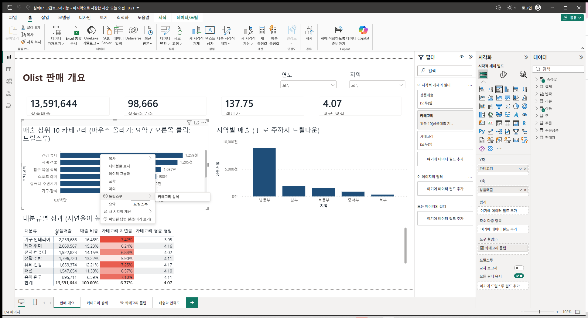
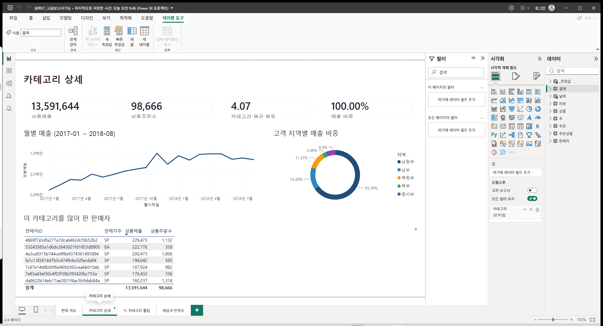

7장. 고급 보고서 기능 - 드릴다운, 드릴스루, 도구 설명, 조건부 서식
학습 목표
- 계층으로 차트를 위아래로 파고드는 드릴다운을 쓴다.
- 상위 N 필터로 많은 항목 중 중요한 것만 보여 준다.
- 표의 값에 따라 색을 칠하는 조건부 서식을 건다.
- 마우스를 올리면 뜨는 도구 설명 페이지, 오른쪽 클릭으로 넘어가는 드릴스루 페이지를 만든다.
이 장에서 만드는 보고서는 0장 첫 화면의 보고서다. 6장 파일을 열고 새 페이지 판매 개요 를 만든다. 제목, 슬라이서(날짜[연도], 주[지역]), 카드 4개(상품매출, 상품주문수, 객단가, 평균 평점)는 6장과 같은 방법으로 놓는다.

7-1. 드릴다운 - 지역에서 주로
- 묶은 세로 막대형 을 놓고 X축에 주[지역]을, 그 아래에 주[주이름]을 넣는다. (3장에서 만든 지역 계층 을 통째로 끌어 놓아도 된다)
- Y축에 상품매출. 정렬은 … → 기준 정렬 → 상품매출, 내림차순.
- 차트 위에 마우스를 올리면 오른쪽 위에 화살표 단추들이 보인다.
| 단추 | 하는 일 |
|---|---|
| ↓ (드릴다운 켜기) | 켠 다음 막대를 누르면 그 지역 안의 주들이 나온다 |
| ⇊ (다음 수준으로 이동) | 모든 지역을 풀어 주 전체를 보여 준다 |
| ⑂ (계층 확장) | 지역과 주를 함께 표시한다 (남동부 SP, 남동부 RJ …) |
| ↑ (드릴업) | 한 단계 위로 돌아간다 |
↓ 를 켜고 남동부 막대를 누르면 상파울루·리우데자네이루·미나스제라이스·이스피리투산투 4개 주의 매출이 나온다.
날짜도 같다. X축에 날짜 계층(연도 → 분기 → 월)을 넣으면 연도별 막대에서 분기, 월로 파고들 수 있다.
7-2. 상위 N 필터 - 매출 상위 10 카테고리
카테고리는 70개가 넘는다. 전부 그리면 막대가 너무 가늘어진다.
- 묶은 가로 막대형 에 Y축 상품[카테고리], X축 상품매출을 넣고 상품매출 내림차순 정렬.
- 차트를 고른 채 필터 창 → 이 시각적 개체의 필터 에서 카테고리 카드를 펼친다.
- 필터 형식 상위 N → 항목 표시 위쪽 10 → 값 칸에 상품매출 을 끌어 놓고 → 필터 적용.

| 순위 | 카테고리 | 상품매출 |
|---|---|---|
| 1 | 건강·뷰티 | 1,258,681 |
| 2 | 시계·선물 | 1,205,006 |
| 3 | 침구·욕실·식탁 | 1,036,989 |
상위 N 은 슬라이서에 따라 다시 계산된다. 연도를 2017 로 고르면 2017년의 상위 10이 나온다.
7-3. 조건부 서식 - 지연율이 높으면 빨간색
행렬에 행 상품[대분류], 값 상품매출 · 매출 비중 · 카테고리 지연율 · 카테고리 평균 평점을 넣는다. 카테고리 지연율은 4장의 카테고리 평균 평점과 같은 방법으로 만든다.
카테고리 지연율 = CALCULATE([지연율], CROSSFILTER('주문상품'[주문ID], '주문'[주문ID], Both))
- 행렬을 고르고 시각화 창 값 칸의 카테고리 지연율 오른쪽 ▾ → 조건부 서식 → 배경색.
- 서식 스타일 그라데이션, 최소값 흰색, 최대값 빨간색 → 확인.
지연율이 높은 대분류일수록 칸이 진한 빨간색이 된다. 숫자를 읽지 않아도 문제가 있는 곳이 눈에 띈다.
조건부 서식에는 배경색 외에 글꼴 색, 데이터 막대(칸 안에 막대), 아이콘(▲▼●) 이 있다. 서식 스타일 규칙 을 고르면 "8% 이상이면 빨강" 처럼 구간을 직접 정할 수 있다.
7-4. 도구 설명 페이지 - 마우스를 올리면 요약 화면
차트의 막대에 마우스를 올리면 기본으로 값 몇 개가 뜬다. 이 자리에 작은 보고서 페이지를 띄울 수 있다.
- 새 페이지를 만들고 이름을 카테고리 툴팁 으로 바꾼다.
- 시각화 창 서식(붓) → 페이지 정보 → 도구 설명으로 사용 을 켠다.
- 캔버스 설정 → 형식 → 도구 설명 (320 × 240 크기)으로 바꾼다.
- 작은 카드 2개(상품매출, 카테고리 평균 평점)와 월별 매출 꺾은선형을 놓는다.
- 페이지 탭을 오른쪽 클릭 → 페이지 숨기기. (보고서를 보는 사람에게 이 페이지가 따로 보이지 않게)
- 판매 개요 페이지로 돌아와 상위 10 막대 차트를 고르고, 서식 → 일반 → 도구 설명 → 형식 보고서 페이지, 페이지 카테고리 툴팁.
막대에 마우스를 올리면 그 카테고리의 매출·평점·월별 추이가 작은 화면으로 뜬다.

7-5. 드릴스루 - 오른쪽 클릭으로 상세 페이지
드릴스루는 한 항목을 골라 그 항목만의 상세 페이지로 넘어가는 기능이다.
- 새 페이지 카테고리 상세 를 만든다.
- 시각화 창 빌드(필드) 아래쪽의 드릴스루 칸에 상품[카테고리]를 끌어 놓는다. 왼쪽 위에 ← 돌아가기 단추가 자동으로 생긴다.
- 이 페이지에 카드(상품매출, 상품주문수, 카테고리 평균 평점, 매출 비중), 월별 매출 꺾은선형, 고객 지역별 매출 도넛형, 판매자별 매출 표를 놓는다.
- 판매 개요 로 돌아가 상위 10 막대 중 하나를 오른쪽 클릭 → 드릴스루 → 카테고리 상세.

카테고리 상세 페이지가 그 카테고리 하나로 걸러져 열린다. 왼쪽 위 돌아가기 로 원래 페이지에 돌아온다.

도구 설명은 잠깐 보기, 드릴스루는 자세히 보기다. 둘 다 같은 원리 - 고른 항목(카테고리)이 대상 페이지의 필터로 넘어간다.
7-6. 더 알아보기 - 책갈피와 단추
보기 → 책갈피 창에서 추가 를 누르면 지금 화면 상태(슬라이서 선택, 보이는 차트)가 저장된다. 삽입 → 단추 로 단추를 놓고 작업 → 책갈피 를 연결하면, 단추를 눌러 저장한 화면으로 바꿀 수 있다. "2018년만 보기", "차트 ↔ 표 바꾸기" 같은 보고서 메뉴를 만들 때 쓴다. 단추의 작업을 페이지 탐색 으로 바꾸면 다른 페이지로 가는 메뉴 단추가 된다.
정리
- 계층을 축에 넣으면 드릴다운(↓ ⇊ ⑂ ↑)으로 위아래 수준을 오간다.
- 상위 N 필터는 측정값 기준으로 위에서 N개만 남긴다. 슬라이서에 따라 다시 계산된다.
- 조건부 서식(배경색·글꼴색·데이터 막대·아이콘)으로 숫자를 색으로 읽게 한다.
- 도구 설명 페이지(마우스 올리기)와 드릴스루 페이지(오른쪽 클릭)는 고른 항목을 필터로 넘겨받는 작은/상세 페이지다.
확인 문제
- 드릴다운으로 북동부 를 열었을 때 매출이 가장 큰 주는 어디인가?
- 상위 10 필터를 아래쪽 5 로 바꾸면 어떤 카테고리가 나오는가? (분류 없음 포함)
- 대분류 행렬에서 카테고리 지연율이 가장 높은 대분류는 어디인가?
- 드릴스루로 건강·뷰티 상세 페이지를 열었다. 고객 지역 중 남동부의 매출 비중은 몇 % 인가?